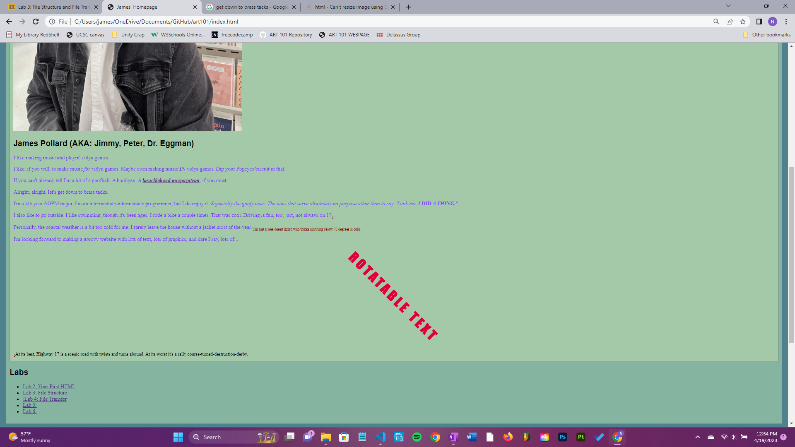
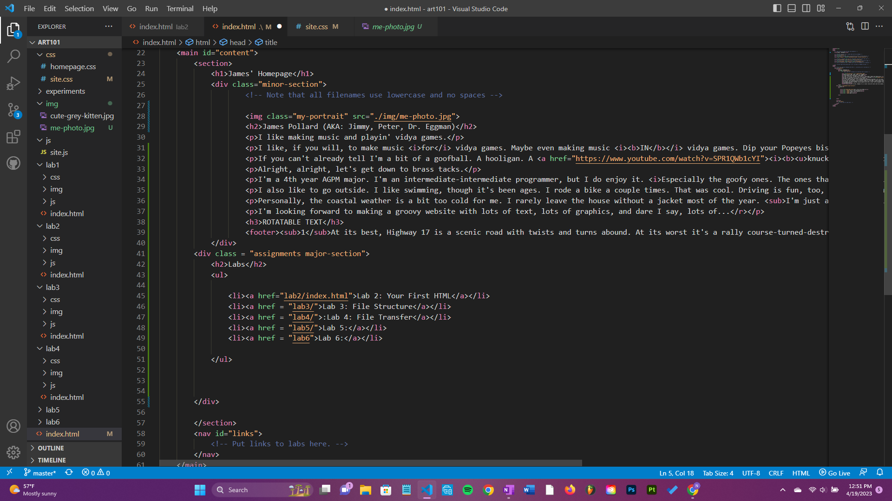
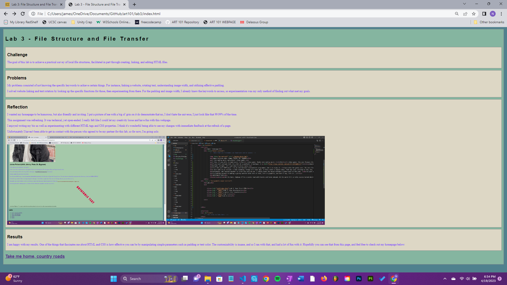
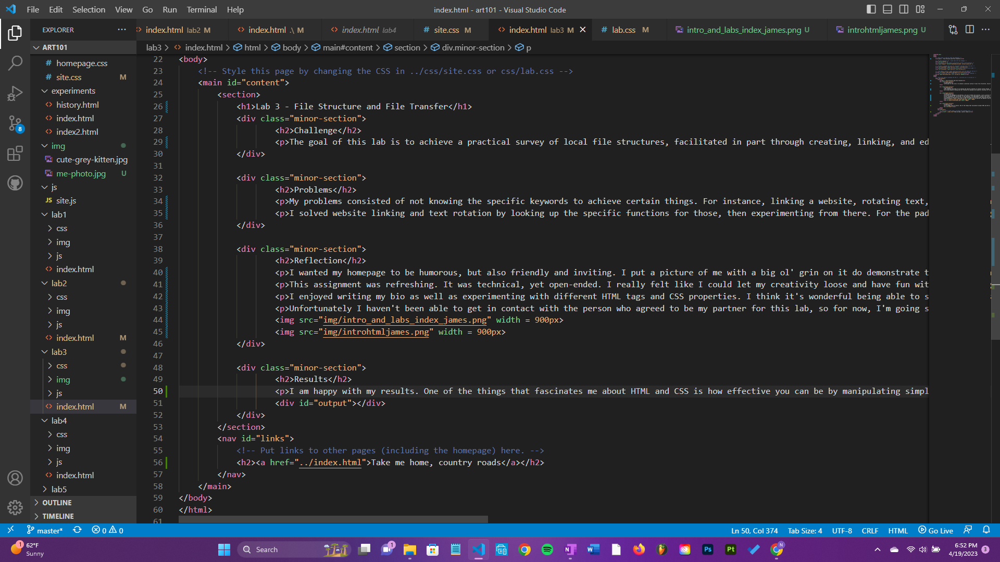

Lab 3 - File Structure and File Transfer
Challenge
The goal of this lab is to achieve a practical survey of local file structures, facilitated in part through creating, linking, and editing HTML files.
Problems
My problems consisted of not knowing the specific keywords to achieve certain things. For instance, linking a website, rotating text, understanding image width, and utilizing effective padding.
I solved website linking and text rotation by looking up the specific functions for those, then experimenting from there. For the padding and image width, I already knew the keywords to access, so experimentation was my only method of finding out what met my goals.
Reflection
I wanted my homepage to be humorous, but also friendly and inviting. I put a picture of me with a big ol' grin on it do demonstrate that no, I don't hate the universe, I just look like that 99.99% of the time.
This assignment was refreshing. It was technical, yet open-ended. I really felt like I could let my creativity loose and have fun with this webpage.
I enjoyed writing my bio as well as experimenting with different HTML tags and CSS properties. I think it's wonderful being able to see my changes with immediate feedback at the refresh of a page.
Unfortunately I haven't been able to get in contact with the person who agreed to be my partner for this lab, so for now, I'm going solo.
A screenshot of my homepage with the lab index.html's linked at the bottom.
A screenshot of my index.html file for my homepage, with my bio and lab links.
A screenshot of my Lab 3 webpage with a link to the homepage at the bottom.
A screenshot of my index.html file for my Lab 3 webpage, detailing my challenges, problems, reflection, and results.
Results
I am happy with my results. One of the things that fascinates me about HTML and CSS is how effective you can be by manipulating simple parameters such as padding or text color. The customizability is insane, and so I ran with that, and had a lot of fun with it. Hopefully you can see that from this page, and feel free to check out my homepage below: